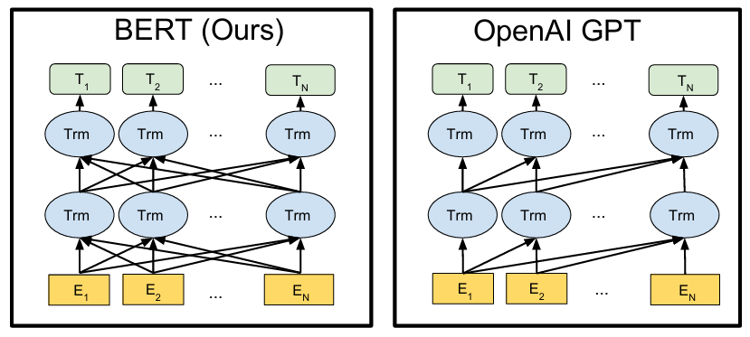
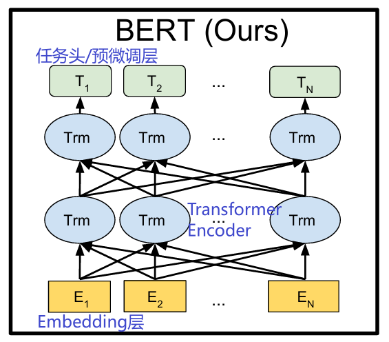
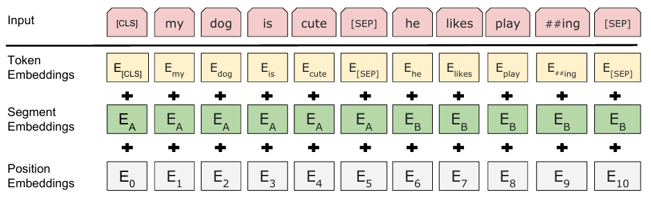
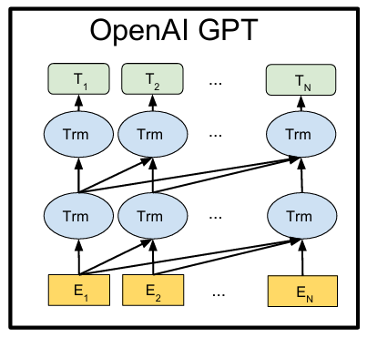
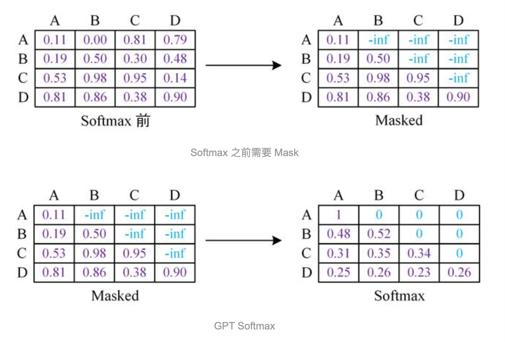
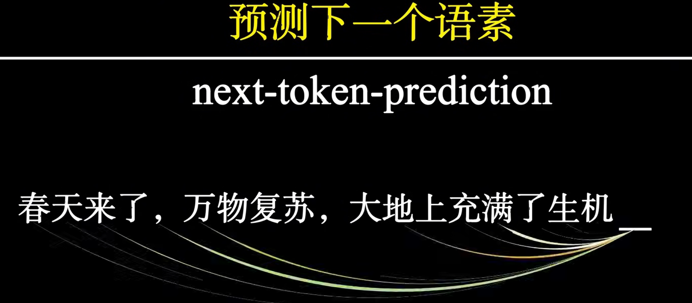
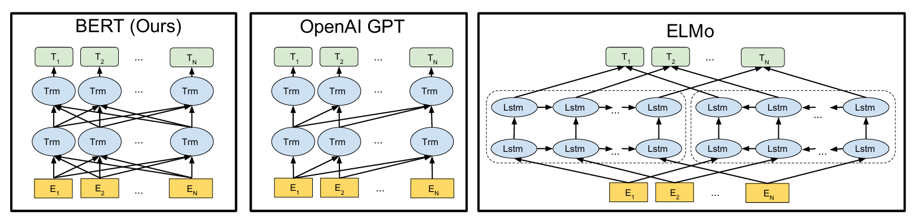

🧠 BERT、GPT 与主流预训练架构
1 NLP主流架构对比
| 架构/模型 | 结构类型 | Attention Mask | 是否可看未来 | 主要用途 | 代表模型 |
|---|---|---|---|---|---|
| Transformer（基础） | Encoder + Decoder | Encoder: padding Decoder: causal + padding |
Encoder: ✅ Decoder: ❌ |
翻译、生成、通用预训练底座 | 原始 Transformer |
| BERT | Encoder-only | 仅 padding mask | ✅ | 文本分类、NER、语义匹配、搜索 | RoBERTa, DeBERTa, ERNIE |
| GPT | Decoder-only | causal mask（上三角） | ❌ | 对话、写作、代码生成 | GPT-4, LLaMA, Qwen |
| T5 / BART | Encoder–Decoder | Encoder: padding Decoder: causal + padding |
混合 | 翻译、摘要、生成QA | T5, BART, mT5 |

2 BERT 模型介绍
2.1 学习目标
- 了解 BERT 的核心思想与适用场景
- 掌握 BERT 架构与三类嵌入
- 理解 BERT 的两大预训练任务（MLM、NSP）
2.2 BERT 简介
BERT（Bidirectional Encoder Representation from Transformers）由 Google 于 2018 提出，是基于 Transformer Encoder 的双向预训练语言模型，通过微调适配各类 NLP 任务。在 SQuAD、GLUE、MultiNLI 等基准上取得显著提升。
《BERT: Pre-training of Deep Bidirectional Transformers for Language Understanding》 https://arxiv.org/pdf/1810.04805.pdf
典型应用： - 文本分类：情感分析、垃圾识别、舆情 - 语义匹配：搜索排序、问句匹配、推荐 - 命名实体识别：金融、医疗、信息抽取 - 阅读理解（QA）：智能客服、知识问答 - 句子关系判断：相似度、同义/相关性判定
2.3 BERT 架构
整体为多层 Transformer Encoder 堆叠，如下：

1. Embedding 层：Token Embedding（含首位 [CLS]）、Segment Embedding（区分句子对）、Position Embedding（可学习位置编码），三者相加作为输入。
-
Transformer 编码层：多层自注意力实现真正的双向建模。 双向是指：在Transformer Encoder 中的自注意力机制中，没有因果掩码（causal mask），每个token可以同时看到左右两侧的token。
-
任务头/预微调层：根据下游任务定制，常见做法：
- 分类：取 [CLS] 最终隐藏状态 + 全连接 + Softmax。
- NER/序列标注：逐 Token 隐藏状态 + 分类头。
- QA：预测答案起止位置。
| 预测粒度 | 任务类型（示例） | 用于预测的特征表示 | Linear 输出维度 | 激活函数 + 损失函数 | 备注 |
|---|---|---|---|---|---|
| 句子级 | 单标签多分类（情感分类、意图识别、新闻主题分类） | [CLS] 最终隐藏状态 或 pooler_output |
类别数 C | Softmax + CrossEntropy | 标准单标签分类 |
| 句子级 | 多标签多分类（多标签主题分类、标签打标） | [CLS] 最终隐藏状态 或 pooler_output |
标签数 C | Sigmoid + BCEWithLogits | 每个标签独立预测 |
| 句子级 | 单标签二分类（语义匹配、句对相似度、同义判断） | 两句 [CLS] 表示（拼接/差值/点乘/余弦） |
1 | Sigmoid + BCEWithLogits | 也可 2个logits+Softmax+CE |
| token级 | 单标签多分类（NER、词性标注） | 每个 token 的最终隐藏状态 | 标签数 C | Softmax + CrossEntropy | 对每个 token 单标签预测 |
| token级 | 二标签多分类（抽取式 QA、阅读理解） | 每个 token 的最终隐藏状态 | 2（start/end） | Softmax + CE(start)+CE(end) | 对 start/end token 分别计算 CE |
| token级 | N标签多分类（完形填空、MLM） | 被 mask 的 token 隐藏状态 | 词表大小 V | Softmax + CrossEntropy | 未 mask token 通常 ignore_index=-100 |
工程调参建议：
- Batch size：16/32
- 学习率：2e-5~5e-5
- Epochs：3/4, 可以增加到5
- 优化器：AdamW，通常 weight_decay=0.01
2.4 预训练任务
- Masked Language Model (MLM)
- 随机选 15% token：80% 替换为 [MASK]，10% 换随机词，10% 保持不变。
- 迫使模型利用上下文恢复被遮蔽词，实现深度双向表示。
- 80% 用 [MASK]：强制模型学习上下文填空
- 10% 用随机词：防止记忆当前位置，强化上下文建模
- 10% 保留原词：减少分布偏移，让模型看到真实 token 形态
- Next Sentence Prediction (NSP)
- 输入句子对 (A, B)，预测 B 是否为 A 的下一句。
- 50% 正样本（真实下一句），50% 负样本（随机句）。
2.5 小结
- BERT = 三类 Embedding + Transformer Encoder 堆叠 + 任务头。
- 预训练任务：MLM 解决双向表征，NSP 建模句间关系。
- 微调时仅调整任务头，即可适配分类、匹配、QA、NER 等多任务。
| 面试题 | 回答要点 |
|---|---|
| BERT 的输入是什么？ | [CLS] token1 token2 ... tokenN [SEP]；包括 input_ids、attention_mask、token_type_ids（句对任务）。 |
[CLS] 与 [SEP] 的作用？ |
[CLS]：标记句子开始。[SEP]：分隔句子或文本，标记结束。 |
| BERT 输出有哪些？ | 1. last_hidden_state：每个 token 的隐藏状态（batch_size, seq_len, d_model）,用于token级任务 2. pooler_output：[CLS] 线性 + tanh，用于句子级分类。 |
| BERT 下游微调常用任务有哪些？ | 单标签分类、多标签分类、句对二分类、NER、抽取式 QA、MLM 微调。 |
| 微调 BERT 的常用参数？ | Batch size 16/32；学习率 2e-5~5e-5；Epoch 3~4；AdamW，weight_decay 0.01。 |
| BERT 如何表示句子级任务？ | [CLS] 输出或 pooler_output 输入 线性层 + Softmax 进行分类 |
3 BERT模型变体
| 模型 | 核心架构与特点 | 关键优化 / 改进 | 参数量与适用场景 |
|---|---|---|---|
| RoBERTa | 与 BERT 架构一致 | 1. 更大数据（16GB→160GB） 2. 更大 batch（256→8000） 3. 更长训练 4. 去 NSP 5. 动态 Mask 6. Byte-BPE编码 |
主流工业 baseline，效果全面优于 BERT |
| MacBERT | 中文优化版 BERT | 1. MLM 改进：近义词替换 + 全词 + n-gram Mask 2. 去 NSP → SOP |
中文分类/NER/QA 强，通用中文 baseline |
| ALBERT | Transformer Encoder | 1. 词嵌入因式分解（低维Embedding + Linear投影） 2. 层间参数共享 3. 去 NSP → SOP(句子顺序预测) 4. 去掉 Dropout 5. MLM 任务优化（长句 + N-gram Masking） |
albert-tiny: 1.8M；超轻量、推理快，精度略降，适合资源受限 |
| DeBERTa | 解耦注意力（content & position 分离） | 1. Disentangled Attention 2. 相对位置编码 3. Mask 解耦 |
BERT 系最强性能，GLUE/SuperGLUE/SQuAD SOTA |
| ELECTRA | 判别式预训练 | 1. Generator + Discriminator 2. 预测 token 是否被替换 |
小模型性能接近大模型，效率最强 |
| SpanBERT | 强化 span 表示 | 1. Span Masking 2. SBO（Span Boundary Objective） 3. 去 NSP |
抽取式 QA、实体识别更强 |
| DistilBERT | BERT 蒸馏版 | 1. 知识蒸馏 2. 层数减半 |
40% 参数、60% 速度，精度保留 ~97% |
| ERNIE (百度) | 中文知识增强 | 1. 实体/词级 Mask 2. 知识图谱注入 |
中文信息抽取、搜索、对话强 |
| SciBERT / BioBERT | 领域专用预训练 | 学术/生物医学语料 | 科研、医疗 NLP 明显优于通用模型 |
| 校招项目落地顺序（推荐） | 说明 |
|---|---|
| Step1: 先跑 baseline | 中文用 MacBERT，英文/通用用 RoBERTa。 |
| Step2: 再冲效果 | 指标瓶颈时换 DeBERTa。 |
| Step3: 按任务换专精模型 | 抽取类任务优先 SpanBERT。 |
| Step4: 资源受限再压缩 | 蒸馏/量化/剪枝，先保线上时延与成本。 |
4 GPT模型介绍
学习目标
- 了解什么是GPT.
- 掌握GPT的架构.
- 掌握GPT的预训练任务.
4.1 GPT介绍
- GPT是OpenAI公司提出的一种预训练语言模型.
-
核心论文
-
GPT与BERT的区别：
- GPT: 单向语言模型，只利用前文预测下一个词 → 擅长文本生成（NLG）
- BERT: 双向语言模型，同时利用上下文 → 擅长文本理解（NLU）
4.2 GPT的架构

GPT 基于 Transformer Decoder 架构，但去掉了 Encoder-Decoder Attention。 每个 Decoder Block 包含：
- Masked Multi-Head Attention
- Feed Forward 层

Masked Multi-Head Attention 保证模型在预测下一个词时只能看到前文信息。 例如给定一个句子包含4个单词[A, B, C, D], GPT需要用[A]预测B, 用[A, B]预测C, 用[A, B, C]预测D. 当要预测B时, 需要将[B, C, D]遮掩起来.

典型 GPT-Decoder 数量：12 层（GPT-2 / base 规模），大模型可达到 24 层或更多。

4.3 GPT训练过程
GPT的训练也是典型的两阶段过程:
- 第一阶段: 无监督的预训练语言模型.
- 第二阶段: 有监督的下游任务fine-tunning.
无监督的预训练语言模型-Next token prediction

无监督学习，通过“由前文预测下一个词”学习语言规律，无需人工标注标签。输入为tgt_input（前文文本序列），输出为tgt_output（前文对应的下一个词组成的序列），本质就是用tgt_input预测对应的tgt_output。
- 给定句子U = [u1, u2, ..., un], GPT的训练目标是最大化由前文预测当前词的概率:
$$ L_1(U)=\sum_i\log P(u_i|u_{i-k},\cdots,u_{i-1};\Theta) $$
输入表示h0为:
$$ h_0 = UW_e + W_p $$
其中We是词嵌入矩阵，Wp是位置编码矩阵.
- 将h0传入GPT的Decoder Block中, 依次得到ht:
$$ h_t = transformer_block(h_{l-1})\;\;\;\;l\in[1,t] $$
- 最后通过ht来预测下一个词:
$$ P(u)=softmax(h_tW_e^T) $$
有监督的下游任务微调fine-tunning
在微调下游任务时，GPT 会根据具体任务调整输出。微调通常采用有监督学习，训练数据包括输入序列 ([x_1, x_2, ..., x_n]) 和标签 (y)。模型目标是根据输入序列预测对应的标签。
在分类任务中，通常只取 序列的最后一个隐藏状态 (h_n) 作为句子表示，然后通过输出线性层（通常是 softmax）预测标签概率。
$$
P(y|x_1,\cdots,x_n)=softmax(h_nW_y + b_y) $$
- 微调任务的目标是最大化下面的函数:
$$ L_2=\sum_{(x,y)}\log P(y|x_1,\cdots,x_n) $$
- 综合两个阶段的目标任务函数, 可知GPT的最终优化函数为:
$$ L_3 = L_2 + \lambda L_1 $$
GPT下游任务微调类型
| 任务类型 | GPT 输出使用方式 | 是否需要自定义下游网络 | 备注 / 建议 |
|---|---|---|---|
| 文本生成 (NLG) | 直接使用 LM head logits | 否 | 可直接生成文本，少量微调可提升生成质量 |
| 文本分类 / 回归 | 使用 last_hidden_state 或 自定义pooling 后向量 |
是 | 定义线性层或 MLP，利用 GPT 输出作为特征表示 |
| 其他任务（问答 / 信息抽取） | 同文本分类 | 是 | 可根据任务设计自定义 head，支持 token-level 或 span-level 输出 |
import torch from transformers import AutoModelForCausalLM, AutoTokenizer # 设置设备 device = torch.device("cuda" if torch.cuda.is_available() else "cpu") # 选择模型 model_name = r"./model/gpt2" # GPT-2 base，适合 CPU 演示 # 加载 tokenizer 和模型 tokenizer = AutoTokenizer.from_pretrained(model_name, local_files_only=True) model = AutoModelForCausalLM.from_pretrained(model_name, local_files_only=True) # 输入文本 prompt = "what do you like?" input_ids = tokenizer(prompt, return_tensors="pt").input_ids # 推理 model.to(device) # @torch.no_grad() with torch.no_grad(): # 生成文本 output = model.generate(input_ids.to(device), max_length=100) # 解码输出 print(tokenizer.decode(output[0], skip_special_tokens=True))
<本地用户目录>\.conda\envs\nlp_project\lib\site-packages\tqdm\auto.py:21: TqdmWarning: IProgress not found. Please update jupyter and ipywidgets. See https://ipywidgets.readthedocs.io/en/stable/user_install.html
from .autonotebook import tqdm as notebook_tqdm
The attention mask and the pad token id were not set. As a consequence, you may observe unexpected behavior. Please pass your input's `attention_mask` to obtain reliable results.
Setting `pad_token_id` to `eos_token_id`:50256 for open-end generation.
The attention mask is not set and cannot be inferred from input because pad token is same as eos token. As a consequence, you may observe unexpected behavior. Please pass your input's `attention_mask` to obtain reliable results.
what do you like?
I'm not sure. I'm not sure if I like it or not. I'm not sure if I like it or not. I'm not sure if I like it or not. I'm not sure if I like it or not. I'm not sure if I like it or not. I'm not sure if I like it or not. I'm not sure if I like it or not. I'm not sure if I like it or not.
4.4 小结
-
GPT 是什么
- OpenAI 提出的单向预训练语言模型
- 仅利用前文信息预测下一个词
-
GPT 架构
- 基于 Transformer Decoder（移除 Encoder-Decoder Attention）
- 保留 Masked Multi-Head Attention + Feed Forward
- 由 12 个改造后的 Decoder Block 堆叠而成
-
GPT 训练
- 第一阶段：无监督语言模型预训练
- 第二阶段：有监督下游任务微调
5 扩展-BERT GPT ELMo模型的对比

| 模型 | 特征提取器 | 语言模型方向 | 优点 | 缺点 | 适用场景 |
|---|---|---|---|---|---|
| ELMo | 双层双向 LSTM | 双向（左右单向 LSTM 拼接） | 上下文动态词向量，解决多义词问题 | LSTM提特征能力弱，特征融合有限 | 目前很少使用 |
| GPT | Transformer Decoder | 单向（只看上文） | 特征提取能力强，自然语言生成能力好 | 单向限制，无法利用未来信息 | 文本生成、对话生成 |
| BERT | Transformer Encoder | 双向（同时看上下文） | 双向上下文理解能力强，多任务预训练（MLM+NSP） | 模型庞大，训练成本高，不适合生成任务 | 文本分类、问答、命名实体识别等理解任务 |
6 常见面试题
BERT 与 GPT 的核心架构差异是什么？
- BERT：双向编码器，使用transformer encoder 架构，适合理解类任务。
- GPT：单向解码器，使用transformer decoder 架构，适合生成类任务。
BERT 的预训练任务有哪些？
- MLM（Masked Language Model）和 NSP（Next Sentence Prediction）。
GPT 的训练目标是什么？
- 训练任务是因果语言建模（next token prediction），即由前文预测后文
- 训练目标是最大化前文预测当前词的概率
BERT 输入中 [CLS] 与 [SEP] 的作用是什么？
- [CLS]：句级表示用于分类,作为起始符。
- [SEP]：分隔句子或段落。
为什么 BERT 不适合直接做自回归生成？
- 双向注意力会看到未来信息，破坏自回归因果性。
6.1 代码作业
-
- BERT 提取句向量：使用
AutoModel.from_pretrained("bert-base-chinese")和AutoTokenizer.from_pretrained("bert-base-chinese")加载模型和分词器，对句子"深度学习是人工智能的重要分支"进行编码，取last_hidden_state中[CLS]位置（第0位）的向量作为句向量，打印该向量的形状（应为[1, 768]）及前 5 个维度的数值。
- BERT 提取句向量：使用
-
- 句子对编码与 token_type_ids 分析：使用
AutoTokenizer.from_pretrained("bert-base-chinese")对句子对进行编码（句子A："今天天气真好"，句子B："适合出去运动"），打印input_ids、token_type_ids、对应的 token 列表，并说明：token_type_ids中0和1分别代表哪个句子，[CLS]和两个[SEP]各在哪个位置。
- 句子对编码与 token_type_ids 分析：使用
import torch # ============================== # 作业1：BERT 提取 [CLS] 句向量 # ============================== def homework1_bert_cls_vector(): from transformers import AutoTokenizer, AutoModel model_name = r"./model/bert-base-chinese" print(f"加载模型: {model_name}（首次运行会自动下载，请确保网络正常）") tokenizer = AutoTokenizer.from_pretrained(model_name) model = AutoModel.from_pretrained(model_name) model.eval() sentence = "深度学习是人工智能的重要分支" inputs = tokenizer(sentence, return_tensors="pt") with torch.no_grad(): outputs = model(**inputs) # last_hidden_state shape: [batch, seq_len, hidden_size] last_hidden = outputs.last_hidden_state cls_vector = last_hidden[:, 0, :] # 取 [CLS] 位置 print(f"\n句子: {sentence}") print(f"last_hidden_state shape: {last_hidden.shape} (batch, seq_len, hidden_size)") print(f"[CLS] 向量 shape: {cls_vector.shape} (期望: [1, 768])") print(f"[CLS] 向量前5个维度: {cls_vector[0, :5].tolist()}") print("\n说明：[CLS] 位置的隐藏状态通常作为整句的语义表示，") print(" 在下游分类任务中接一个线性分类头即可完成微调") # ============================== # 作业2：句子对编码与 token_type_ids 分析 # ============================== def homework2_sentence_pair(): from transformers import AutoTokenizer tokenizer = AutoTokenizer.from_pretrained("bert-base-chinese") sent_a = "今天天气真好" sent_b = "适合出去运动" # 句子对编码 encoding = tokenizer(sent_a, sent_b, return_tensors="pt") input_ids = encoding["input_ids"][0].tolist() token_type_ids = encoding["token_type_ids"][0].tolist() attention_mask = encoding["attention_mask"][0].tolist() tokens = tokenizer.convert_ids_to_tokens(input_ids) print(f"句子A: {sent_a}") print(f"句子B: {sent_b}\n") print(f"input_ids ({len(input_ids)} 个): {input_ids}") print(f"token_type_ids ({len(token_type_ids)} 个): {token_type_ids}") print(f"token 列表 ({len(tokens)} 个): {tokens}\n") # 分析特殊 token 位置 sep_positions = [i for i, t in enumerate(tokens) if t == "[SEP]"] cls_positions = [i for i, t in enumerate(tokens) if t == "[CLS]"] print("特殊 token 位置分析:") print(f" [CLS] 在位置: {cls_positions} → 句子开头，代表整体语义") print(f" [SEP] 在位置: {sep_positions}") print(f" 第1个[SEP]（位置{sep_positions[0]}）: 句子A结束") print(f" 第2个[SEP]（位置{sep_positions[1]}）: 句子B结束") # token_type_ids 含义 a_tokens = [tokens[i] for i, t in enumerate(token_type_ids) if t == 0] b_tokens = [tokens[i] for i, t in enumerate(token_type_ids) if t == 1] print(f"\ntoken_type_ids 含义:") print(f" 值为 0 → 属于句子A（含[CLS]和第1个[SEP]）: {a_tokens}") print(f" 值为 1 → 属于句子B（含第2个[SEP]）: {b_tokens}") print("\nBERT 通过 token_type_ids 区分句子对，用于 NSP（下一句预测）等预训练任务") if __name__ == "__main__": print("=" * 60) print("作业1：BERT 提取 [CLS] 句向量") print("=" * 60) homework1_bert_cls_vector() print("\n" + "=" * 60) print("作业2：句子对编码与 token_type_ids 分析") print("=" * 60) homework2_sentence_pair()
============================================================
作业1：BERT 提取 [CLS] 句向量
============================================================
<本地用户目录>\.conda\envs\nlp_project\lib\site-packages\tqdm\auto.py:21: TqdmWarning: IProgress not found. Please update jupyter and ipywidgets. See https://ipywidgets.readthedocs.io/en/stable/user_install.html
from .autonotebook import tqdm as notebook_tqdm
加载模型: ./model/bert-base-chinese（首次运行会自动下载，请确保网络正常）
句子: 深度学习是人工智能的重要分支
last_hidden_state shape: torch.Size([1, 16, 768]) (batch, seq_len, hidden_size)
[CLS] 向量 shape: torch.Size([1, 768]) (期望: [1, 768])
[CLS] 向量前5个维度: [0.16685250401496887, -0.4325307607650757, -0.10297569632530212, 0.7755419611930847, 1.0006687641143799]
说明：[CLS] 位置的隐藏状态通常作为整句的语义表示，
在下游分类任务中接一个线性分类头即可完成微调
============================================================
作业2：句子对编码与 token_type_ids 分析
============================================================
句子A: 今天天气真好
句子B: 适合出去运动
input_ids (15 个): [101, 791, 1921, 1921, 3698, 4696, 1962, 102, 6844, 1394, 1139, 1343, 6817, 1220, 102]
token_type_ids (15 个): [0, 0, 0, 0, 0, 0, 0, 0, 1, 1, 1, 1, 1, 1, 1]
token 列表 (15 个): ['[CLS]', '今', '天', '天', '气', '真', '好', '[SEP]', '适', '合', '出', '去', '运', '动', '[SEP]']
特殊 token 位置分析:
[CLS] 在位置: [0] → 句子开头，代表整体语义
[SEP] 在位置: [7, 14]
第1个[SEP]（位置7）: 句子A结束
第2个[SEP]（位置14）: 句子B结束
token_type_ids 含义:
值为 0 → 属于句子A（含[CLS]和第1个[SEP]）: ['[CLS]', '今', '天', '天', '气', '真', '好', '[SEP]']
值为 1 → 属于句子B（含第2个[SEP]）: ['适', '合', '出', '去', '运', '动', '[SEP]']
BERT 通过 token_type_ids 区分句子对，用于 NSP（下一句预测）等预训练任务